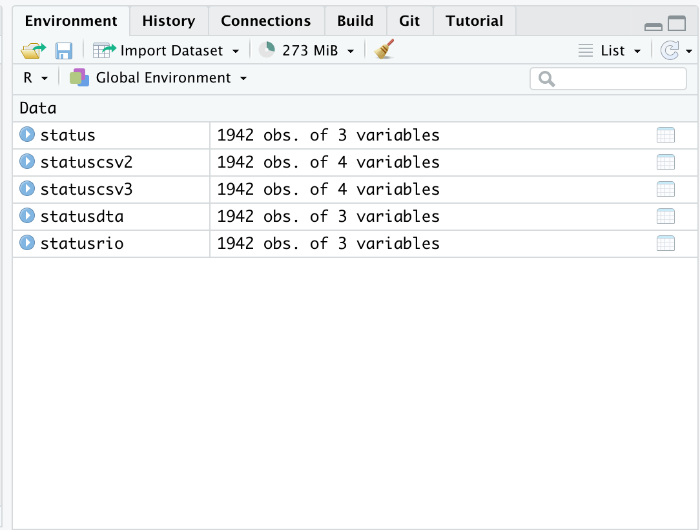
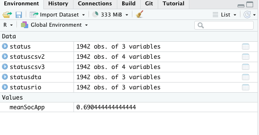
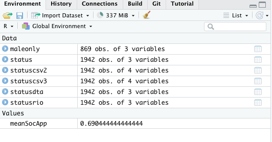
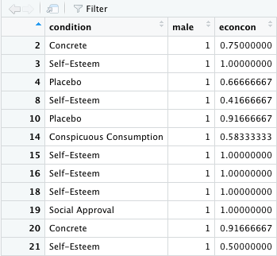
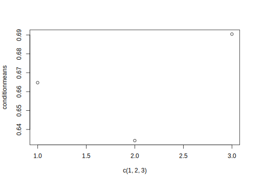
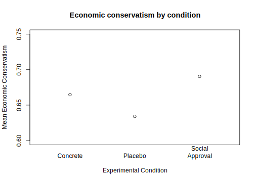

1.5 Getting Comfortable with R
We will use data from the article below, also provided as additional practice in section 2 of the course notes:
Thal, A. (2020). The desire for social status and economic conservatism among affluent Americans. American Political Science Review, 114(2), 426-442.
This study is an experiment where affluent Americans are randomly assigned to encounter Facebook posts in which others broadcast their economic success. These posts are designed in a way that encourages affluent respondents to view economic success as a means of achieving social status. The experiment includes a sample of 2010 affluent Americans– people who report household incomes in the top 10 percent of the U.S. income distribution.
- Causal Question: Does desire for social status influence economic views of affluent Americans?
- Randomization: Randomly assign respondents to view different fictional Facebook posts designed to signal different motivations
- Outcome: An economic conservatism index based on respondents’ support for decreasing “taxes on households making $150,000 or more a year,” support for decreasing the “taxes on money people make from selling investments, also referred to as capital gains,” and support for decreasing “government regulation of business and industry.”
- Comparison: Average economic views between experimental conditions that vary in the type of social cues given.


1.5.1 Dataframes in R
Kosuke Imai’s QSS Chapter 1.3.5 pgs. 20-25 discusses different ways to load data based on the file type.
- Common file types include .csv, .RData, .dta (a Stata format), .sav (and SPSS format)
- You want to match the function with the file type.
For .RData files, we can just use the load command. That function works the following way:
load("status.RData")After running the above code, an object will show up in your R environment.
head(status)## condition male econcon
## 2 Concrete 1 0.7500000
## 3 Self-Esteem 1 1.0000000
## 4 Placebo 1 0.6666667
## 5 Self-Esteem 0 0.2500000
## 6 Self-Esteem 0 1.0000000
## 7 Social Approval 0 0.8333333We also have a status.dta version of the file. To load this dataset, we could use the read.dta function which uses the library(foreign) package, a package uses for working with data types that are foreign to R.
- When working with a function from outside of “base R”– one that is located in a package, you always must open the package first using
library()before using the function.
library(foreign)
statusdta <- read.dta("status.dta")In addition to these dataset-specific functions, some people like to use the package rio which has a generic function import which can be used to load many file types.
- If you do not have a package installed, the first time you use the package, you must first install it using
install.packages(). By addingdependencies = Tto this function, R will also automatically install any other packages that this package relies on to use.
install.packages("rio", dependencies=T)library(rio)
statusrio <- import("status.dta")We also have a status.csv file type. We can use read.csv() to load this file.
statuscsv <- read.csv("status.csv")As an alternative, some people prefer to use the read_csv function that comes from the tidyverse package readr.
- If you get an error saying you haven’t installed
tidyverse, follow what we did above in installing theriopackage, but this time, fortidyverse.
library(tidyverse)
statuscsv2 <- read_csv("status.csv")YOUR TURN: Not that we could also use import() to load the .csv version of the file. You can try that now:
## Use import to load the csv file
## Note: remember to use the appropriate library commandEach of these processes will load an object in your R environment.
- Note that there may be minor differences in how the data load depending on the function used. For example, some may include an extra indexing variable with a unique number per row.
- In addition, there may be differences in the
class()of how a variable loads.

Let’s explore the data.
- We can view the data in a separate window using the
View()command
View(status)
- Note that the top of each column is a header with a variable name.
- Thes variable names “belong” to the dataframe object
status
That is, status is a dataframe, which means it has rows and columns.
- In our case, every row represents a different survey respondent.
- The corresponding values in each column represent the values a given respondent takes on a different variable in the dataset. For example, the respondent in the 8th row was in the Self-Esteem condition, took the value 1 on male, and the value .4166 on econcon.
class(status)## [1] "data.frame"We have three primary columns or “variables” or “vectors” in our data.
condition: Placebo, Concrete, Self-Esteem, Social Approval, Conspicuous Consumptionmale: 1= male; 0= otherwiseeconcon: Economic views. Numeric variable from 0 to 1, with higher values reflecting more conservative views
To access a column name that exists within a dataframe (i.e., the column condition exists within the dataframe status), we generally use the syntax of the dataframename$columnname. The dataframe name is on the left of the dollar sign, and the column name is on the right.
To access the values of the condition column, we type:
status$conditionYOUR TURN: access the values in the econcon column.
## Access the values in the econcon column1.5.2 Computing summary statistics of variables
This syntax (dataframename$columnname) applies when we want to compute summary statistics of specific columns within data frames.
R has a number of functions (See QSS chapter 1.3.4) that can be used to summarize columns aka vectors.
- Examples:
mean(),median(),range(),sd(),length(),table()
To apply these to a column within our dataframe, we similarly have to follow the syntax dataframename$columnname inside our function. For example, to find the range of the econcon variable, we write:
range(status$econcon)## [1] 0 1YOUR TURN: Find the mean of this column.
## Find the mean of the econcon columnIn the real world, often our data include missing values, which R represents as an NA. When this happens, we add an argument to these common functions, na.rm=T which tells R to “remove” / ignore the NA values when computing the mean, range, standard deviation, etc. Not all functions allow this argument, so if you receive an error when trying to use it, it could be that the argument doesn’t work for that particular function
range(status$econcon, na.rm=T)## [1] 0 1Not all functions allow this argument, so if you receive an error when trying to use it, it could be that the argument doesn’t work for that particular function. For example, the code below will generate an error because table() doesn’t have this argument.
table(status$econcon, na.rm=T)A common tool we may use to summarize variables is also the table() command, which will tell you how many observations (survey respondents) take on a particular value of a variable. Example:
table(status$condition)##
## Placebo Concrete Conspicuous Consumption
## 394 391 392
## Self-Esteem Social Approval
## 390 375We see, for example, that 394 respondents were in the Placebo experimental condition.
YOUR TURN: Use table on the male column and indicate how many males and females we have in the data.
## Use the table command to indicate how many male and female respondents1.5.3 Relational operators
In experiments, we often don’t want to know these summary statistics for all respondents. Instead, often we want to know the summary statistics separately for those that belong to different subgroups of the sample.
We can use relational operators to help us isolate particular subgroups of data when conducting our analysis. We have several relational operators in R that evaluate logical statements:
==, <, >, <=, >=, !=- We have a statement and R evaluates it as
TRUEorFALSE - Note that relational operators use a double
==to evaluate logical equivalency. This is different from the single=that is sometimes used elsewhere in R, such as in arguments within functions (.eg.,na.rm = T)
## for each observation, does the value of condition equal "Self-Esteem"?
status$condition == "Self-Esteem"For some values, it returns TRUE because a respondent was in that condition. For others, it returns FALSE because a respondent was in a different condition.
- Note that R is very sensitive, including case sensitive. You want to make sure you enter the values (e.g., “Self-Esteem”) EXACTLY as they appear in the dataframe. Extra spaces, typos, wrong capitalization will all give you the wrong answer.
- Note that we use quotations around “Self-Esteem” because it is text. If instead we had a logical statement involving a numeric value, we would not need quotes.
status$male == 1YOUR TURN: Use a logical statement to evaluate whether a given respondent takes the value “Placebo” as the condition variable.
## Does condition equal Placebo?By putting this logical statement within [ ], we are asking R to take the mean() of the variable staus$econ for the subset of observations for which a logical statement is TRUE.
- Let’s take the overall
meanof theeconconvariable - This represents the average economic conservatism for all respondents
mean(status$econcon, na.rm=T)## [1] 0.6633625- Let’s take the
meanof theeconconvariable for those in the “Social Approval” condition (status$condition == "Social Approval") - This represents the average economic conservatism for respondents in the Social Approval condition
mean(status$econcon[status$condition == "Social Approval"], na.rm=T)## [1] 0.6904444Your TURN: Compare this to the mean of those in the Placebo condition.
## Find the mean econcon for those in the Placebo condition1.5.3.1 Adding Boolean operators to relational statements
Instead of a single relational statement, sometimes we may want to combine multiple relational operators into a single logical statement.
For example, we may want to find the average economic views for male respondents, only, in the social approval condition. We need to find those that are in the Social Approval condition and are male.
- In R, we can use
&and|to represent AND and OR statements
For example, this will evaluate the logical statement asking if a respondent is in the Social Approval condition AND is male.
status$condition == "Social Approval" & status$male == 1For example, this will evaluate the logical statement asking if a respondent is in the Social Approval condition OR the Placebo condition.
status$condition == "Social Approval" | status$condition == "Placebo"Just like before, we can embed this entire statement into our [] to isolate these respondents when calculating descriptive statistics, such as average economic conservatism for these respondents.
mean(status$econcon[status$condition == "Social Approval"
& status$male == 1], na.rm=T)## [1] 0.733631YOUR TURN: Find the average economic conservatism for respondents who are either in the Social Approval or Placebo conditions.
### Mean econcon for respondents in Social Approval or Placebo condition1.5.3.2 Storing calculations as objects
For any of these calculations, you can store them as objects in your R environment by using the <- assignment tool. You will always write the object name you desire to the left of this tool, and keep the calculations on the right.
- Storing these calculations can be useful because instead of needing to remember the raw number, you can just write the object name to retrieve the calculation.
For example we could save the mean economic views for respondents in the Social Approval condition as an object meanSocApp
- You can name objects pretty much anything. You just want them to be relatively short, informative, and try to avoid special characters or words that have some other meaning in R (Example: you wouldn’t want to name an object
rangebecause that is already a function name in R.)
meanSocApp <- mean(status$econcon[status$condition == "Social Approval"],
na.rm=T)
meanSocApp## [1] 0.6904444Once you create an object, it should also show up in your R environment.

Let’s do the same for the Placebo and Concrete conditions.
meanPlacebo <- mean(status$econcon[status$condition == "Placebo"],
na.rm=T)
meanPlacebo## [1] 0.6340948meanConcrete <- mean(status$econcon[status$condition == "Concrete"],
na.rm=T)
meanConcrete## [1] 0.66474851.5.4 Subsetting Dataframes
Thus far, we have used relational operators and boolean statements to isolate values within particular columns of a dataframe. We might also just want to simply cut down our whole dataframe (e.g., status) and create a new dataframe that contains only those rows relevant to a particular group of respondents.
- In subsetting an entire dataframe, we retain all of the columns in the dataframe. (I.e., we will still have the columns
condition,maleandeconcon). However, we will have a smaller number of rows.
For example, perhaps the researcher was interested in how the experiment worked for only respondents who are male. If we know we are going to conduct all of our analyses just on male respondents, it could be efficient for us to create a new, smaller dataframe that only includes rows where a respondent is male.
To do this, we will use the subset R command. It has the syntax newdataframe <- subset(existingdataframe, logicalstatement). For example, let’s create a new dataframe maleonly that contains the rows from the existing dataframe status where male == 1, reflecting that a respondent is male.
- Note: In this function, we deviate from our previous syntax of using
dataframe$columnname. This is because in the first argument, we tell R in which dataframe our columns are located.
maleonly <- subset(status, male ==1)Note that this creates a new dataframe object in our environment. It just has a smaller number of observations (rows), reflecting that not all of our sample was male.

We can view this new dataframe using the same View() command as before.
View(maleonly)
Note that it looks very similar to the original status dataframe, but now all of the values in the male column are 1.
We can treat this new dataframe the same way as status going forward, in that we can use the maleonly$columnname syntax to summarize columns within the maleonly dataframe. For example, maleonly$econcon would represent the values that male respondents take on economic conservatism.
Your TURN: Using the new dataframe, find the average economic conservatism for male respondents.
## Using maleonly dataframe, find mean economic conservatism
## Note the value's equivalence to
mean(status$econcon[status$male == 1], na.rm=T)## [1] 0.69486Subsetting data can be an efficient way to write code to avoid the need to repeat relational operators within functions when computing summary statistics. For example, in the first problem set, you may subset your data to include only people that prefer to watch Entertainment, another subset for those who prefer to watch Fox, and so on.
1.5.5 Working outside of dataframes
While much of our work in analyzing social science studies will exist within our dataframe objects, there are times where we may construct our own sets of objects that exist outside of dataframes.
For example, we created meanConcrete, meanPlacebo, and meanSocApp objects.
- These represent the average economic conservatism for respondents in the Concrete, Placebo, and Social Approval conditions.
To retrieve each of these values, we could type them separately:
meanConcrete## [1] 0.6647485meanPlacebo## [1] 0.6340948meanSocApp## [1] 0.6904444However, to be more efficient, we could also bind them together in a single object using the c() function. This function creates a vector.
conditionmeans <- c(meanConcrete, meanPlacebo, meanSocApp)
conditionmeans## [1] 0.6647485 0.6340948 0.6904444Now, to retrieve the means for all of these conditions, we can simply type and run conditionmeans.
Note: Because conditionmeans does not exist within a dataframe, we don’t need a $ to access it. This is in contrast to a vector like econcon which solely exists within the dataframes status or maleonly.
Binding together values can come in handy when writing up reports of an analysis or even for visualization.
While we won’t go into detail on plotting in this session, we can see an example of plotting these three condition means at points 1,2, and 3 on a simple point-based plot() in R.
plot(x = c(1,2,3),
y = conditionmeans)
We can spice up the plot with some aesthetics to make it more readable:
plot(x = c(1,2,3),
y = conditionmeans,
xlim = c(.5, 3.5),
ylim=c(.6, .75),
xlab= "Experimental Condition",
ylab= "Mean Economic Conservatism",
main = "Economic conservatism by condition",
xaxt="n")
axis(1, c(1,2,3), c("Concrete", "Placebo", "Social\n Approval"),
tick=F)
How did seeing a message about social approval influence economic attitudes?